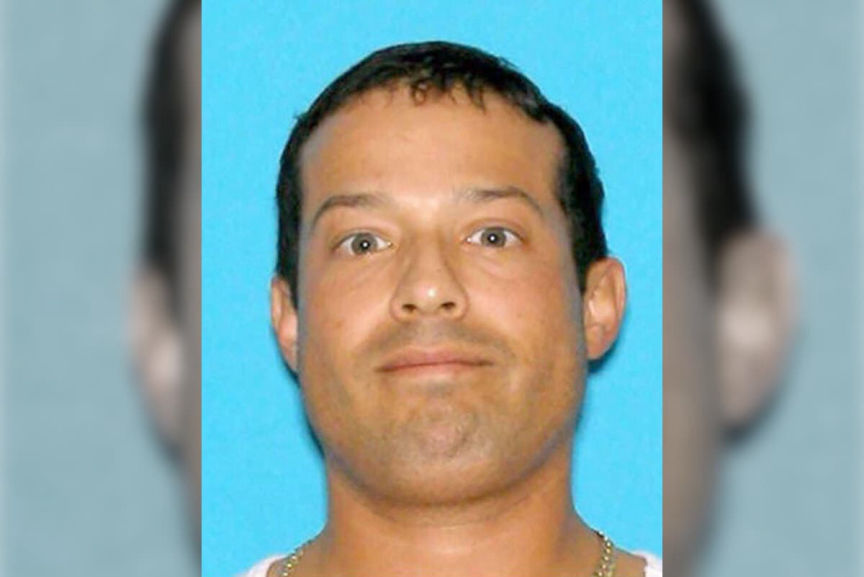
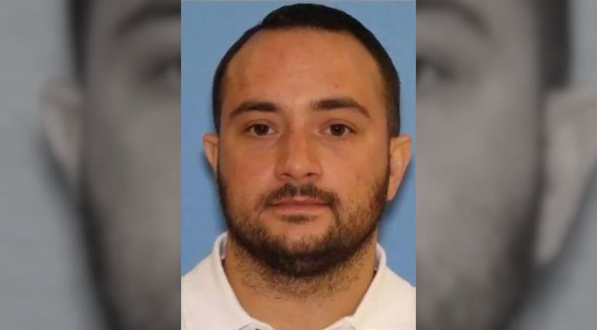
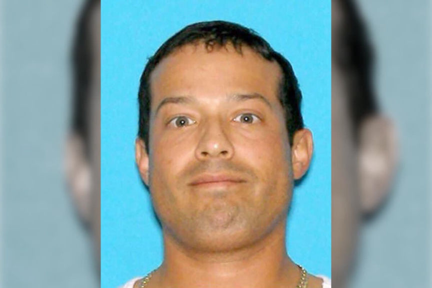
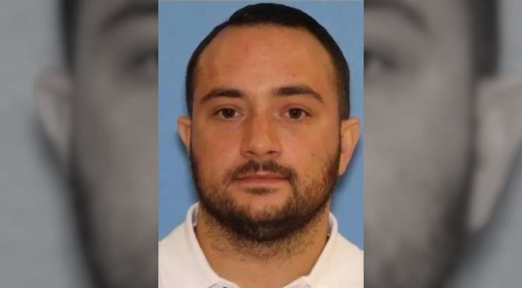

Three Sentenced to Prison for Selling Counterfeit Oxy Pills
Three Seattle men were sentenced to prison for producing and selling counterfeit oxycodone pills laced with fentanyl.
The defendants, Bradley Woolard, 42, Anthony Pelayo, 34, and Jerome Isham, 40, were imprisoned to a total of 45 years in prison for pressing fentanyl and its analogues into pills that they distributed as oxycodone pills.

The trio’s imprisonment stemmed from a tip that resulted in the arrest of a suspect driving from Woolard’s home. After stopping the suspect, police found approximately 3,000 fake oxycodone pills and more than $8,000 in cash. The investigators then acquired search warrants for Woolard’s home.
Police executed search warrants at Woolard’s property on July 28, 2018. The search resulted in the seizure of approximately 12,000 counterfeit oxycodone pills. The pills tested positive for furanyl fentanyl. Further searches resulted in the seizure of approximately $1 million in cash and gold, 29 firearms, and thousands of rounds of ammunition.

Investigators established that Woolard had started purchasing fentanyl and furanyl fentanyl in powder form from China in 2015. He found suppliers on the darkweb. He then purchased a pill press and other materials on the internet and started producing counterfeit oxycodone pills laced with fentanyl or furanyl fentanyl. Woolard later established an operation that had produced more than 2.5 million pills.
Woolard handed the operation to Pelayo in 2017. He retained the role of purchasing and importing fentanyl from China. He had also continued to help Pelayo in the production and distribution of the pills. The proceeds of the operation made it possible for him to pay for his drug addiction treatment in Costa Rica and Mexico, at a cost of up to $50,000 per month.

Isham was one of the operation’s most prominent distributors. He had distributed more than 100,000 of the pills between July 2017 and June 2018. Isham had also recruited individuals who received fentanyl shipments from China on Woolard’s behalf.
On November 30, 2021, Woolard was sentenced to 20 years in prison after he was convicted of 28 counts related to drug trafficking, money laundering, and illegal gun possession offenses. He was also ordered to pay a $250,000 fine.
Pelayo was found guilty of money laundering and drug trafficking conspiracies as well as illegal gun possession offenses and was sentenced to 15 years in prison. He will also pay a $150,000 fine.
Isham was sentenced to 10 years in prison after he was found guilty of similar offenses.
Each of the trio’s prison terms will be followed by 5 years of supervised release.
The defendants, Bradley Woolard, 42, Anthony Pelayo, 34, and Jerome Isham, 40, were imprisoned to a total of 45 years in prison for pressing fentanyl and its analogues into pills that they distributed as oxycodone pills.
Durgs, guns, and cash. Every drug dealer's dream. | USAO
The trio’s imprisonment stemmed from a tip that resulted in the arrest of a suspect driving from Woolard’s home. After stopping the suspect, police found approximately 3,000 fake oxycodone pills and more than $8,000 in cash. The investigators then acquired search warrants for Woolard’s home.
Police executed search warrants at Woolard’s property on July 28, 2018. The search resulted in the seizure of approximately 12,000 counterfeit oxycodone pills. The pills tested positive for furanyl fentanyl. Further searches resulted in the seizure of approximately $1 million in cash and gold, 29 firearms, and thousands of rounds of ammunition.

Bradley Woolard after booking | USAO
Investigators established that Woolard had started purchasing fentanyl and furanyl fentanyl in powder form from China in 2015. He found suppliers on the darkweb. He then purchased a pill press and other materials on the internet and started producing counterfeit oxycodone pills laced with fentanyl or furanyl fentanyl. Woolard later established an operation that had produced more than 2.5 million pills.
Woolard handed the operation to Pelayo in 2017. He retained the role of purchasing and importing fentanyl from China. He had also continued to help Pelayo in the production and distribution of the pills. The proceeds of the operation made it possible for him to pay for his drug addiction treatment in Costa Rica and Mexico, at a cost of up to $50,000 per month.

Anthony Pelayo | USAO
Isham was one of the operation’s most prominent distributors. He had distributed more than 100,000 of the pills between July 2017 and June 2018. Isham had also recruited individuals who received fentanyl shipments from China on Woolard’s behalf.
On November 30, 2021, Woolard was sentenced to 20 years in prison after he was convicted of 28 counts related to drug trafficking, money laundering, and illegal gun possession offenses. He was also ordered to pay a $250,000 fine.
Pelayo was found guilty of money laundering and drug trafficking conspiracies as well as illegal gun possession offenses and was sentenced to 15 years in prison. He will also pay a $150,000 fine.
Isham was sentenced to 10 years in prison after he was found guilty of similar offenses.
Each of the trio’s prison terms will be followed by 5 years of supervised release.